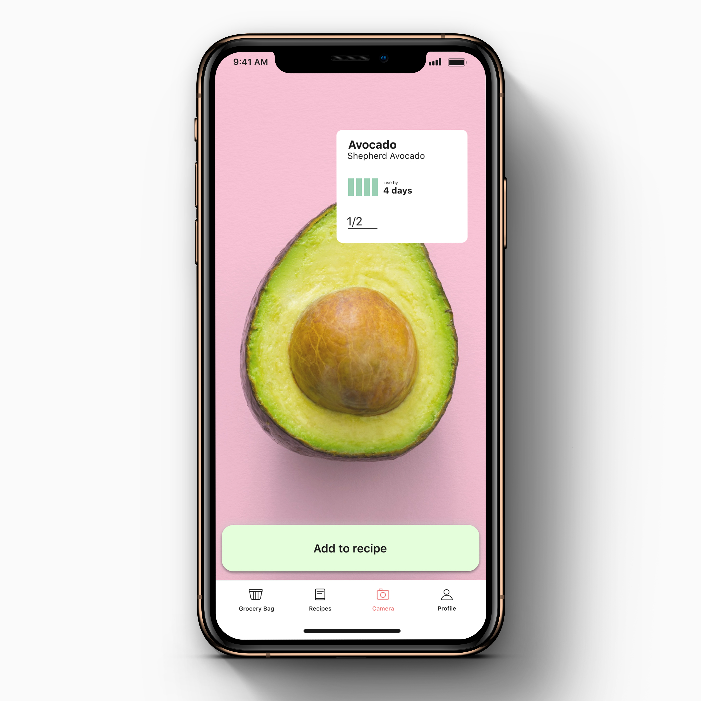

Research
Based on a recent study, around 58% of all food produced in canada is either lost or wasted. Around $10 billion worth is lost at the consumer level. Addressing the food wastage at the consumer level, will immensely impact, i.e., reduce carbon-dioxide and methane gas emissions from food landfills created by food waste.
From research, one commonly occuring theme was consumers throwing away cooked and/or uncooked food near expiry date, which could be donated or reused.
Problem Statement
It is evident that at the consumer level, we as consumers are not conscious about our food wastage and are not aware multiple ways of resuing, sharing and donating food.
Creating a clean, simple and intuitive app for users to minimize & prevent food wastage and help consumers be conscious of smart food practices.
Design Solution
Food wastage can be minimized and if possible prevented at the root, by planning meal in advance, to avoid ingredient wastage and storage of excess ingredients which may go unused. If there are excess ingredients, sharing and/or donating them to other consumers, would definitely help minimize food wastage. Reusing leftover food will certainly help consumers contribute to a reduced food wastage community.
Smart meal is an app that help consumers inculcate smart food practices in their routine by planning meals in advance, sharing and/or donating excess ingredients and encouraging reuse of leftover cooked food.
Visual Identity
Bearing in mind the main goal of the app was to enable consumers incorporate smart food practices in their routine to reduce & reuse food, creating a simple, fresh, bold yet approachable identity would interest and engage consumers.
Initial Ideation
During the initial stages of app ideation, the features involved:
- Image recognition of ingredients in the fridge and generating recipes based on the ingredients best-before dates
- Sharing cooking schedules, grocery lists among other home dwellers, to decide on the meal of the day.
- Award gift cards from local zero-waste grocery stores for consistent effort towards reducing food waste, encouraging customer retention and engagement.


Final Product
Find recipes from ingredients in your refridgerator
Use your camera, to identify soon to expire products using image recognition for effective use in your meal. The recipes are also generated by prioritizing ingredients that might expire soon over ingredients with a longer shelf life.
Reuse of leftover food by giving it a delightful twist
Add variety to your leftovers using our suggested recipes. This helps reduce food wastage and maximize your meal experience. You will never look at your leftovers with disappointment again.


Find recipes from ingredients in your refridgerator
Use your camera, to identify soon to expire products using image recognition for effective use in your meal. The recipes are also generated by prioritizing ingredients that might expire soon over ingredients with a longer shelf life.

Strategy
The Smart Meal app can be used by consumers to track their personal progress through the app, while understanding their impact and contribution towards food wastage reduction. The app also helps inculcate a sense of community with shared interests through food sharing, donation. Local zero-waste pioneers and grocery store owners can encourage initiatives through gift cards and certificates to their consumer base.